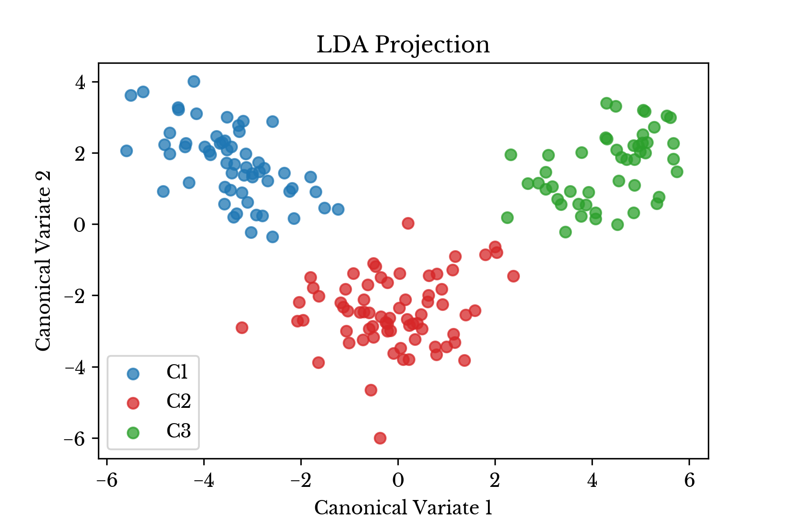
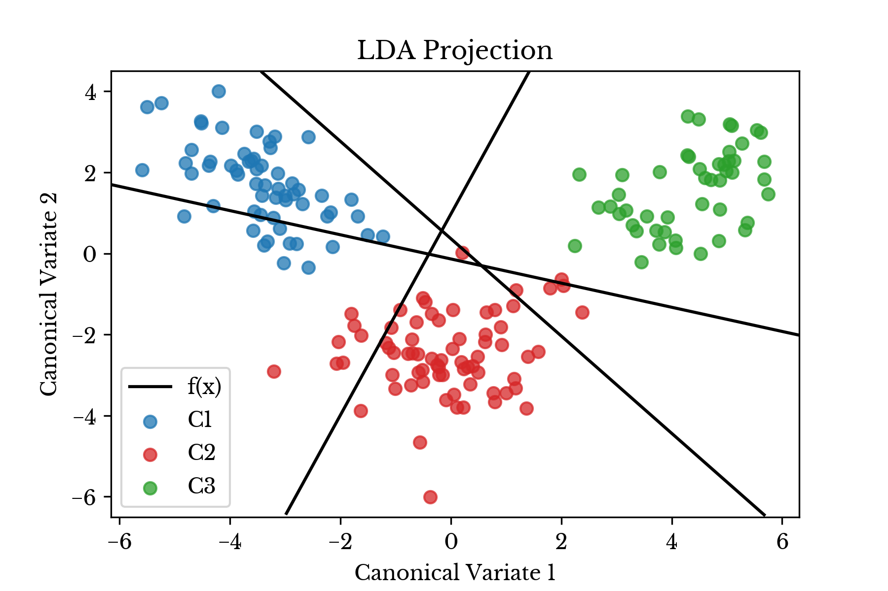
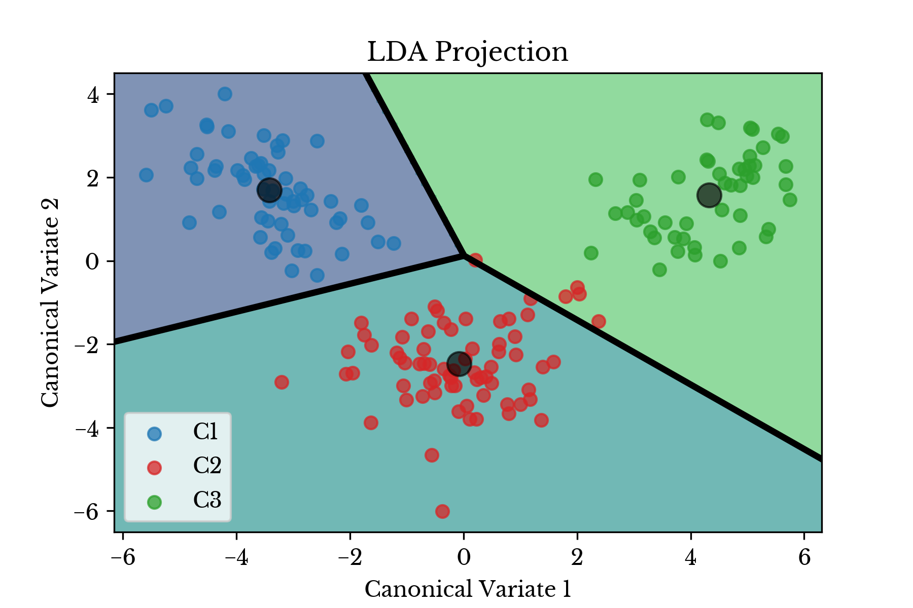
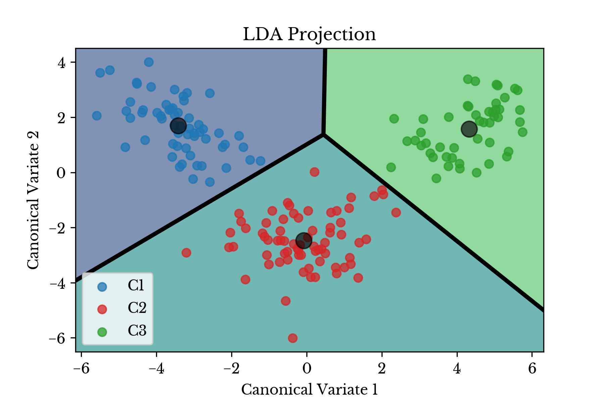

Wine Classification Using Linear Discriminant Analysis
Sat, 13 Feb 2016
Computer Science, Machine Learning, Mathematics
In this post, a classifier is constructed which determines the cultivar to which a specific wine sample belongs. Each sample consists of a vector \(\textbf{v}\) of 13 attributes of the wine, that is \(\textbf{v} \in \mathbb{R}^{13}\). The attributes are as follows:
- Alcohol
- Malic acid
- Ash
- Alcalinity of ash
- Magnesium
- Total phenols
- Flavanoids
- Nonflavanoid phenols
- Proanthocyanins
- Color intensity
- Hue
- OD280/OD315 of diluted wines
- Proline
Based on these attributes, the goal is to identify from which of three cultivars the data originated. The data set is available at the
UCI Machine Learning Repository. The following code block shows three rows from the dataset.
1,14.23,1.71,2.43,15.6,127,2.8,3.06,.28,2.29,5.64,1.04,3.92,1065
1,13.2,1.78,2.14,11.2,100,2.65,2.76,.26,1.28,4.38,1.05,3.4,1050
1,13.16,2.36,2.67,18.6,101,2.8,3.24,.3,2.81,5.68,1.03,3.17,1185
...
The first column denotes the target class while the remaining 13 columns contain the sample features. This data can be read into a matrix using the
loadtxt function from numpy.
import numpy as np
import matplotlib.pyplot as plt
from sklearn import cross_validation
from sklearn.discriminant_analysis import LinearDiscriminantAnalysis
# %% Read data from csv file
A = np.loadtxt('wine.data', delimiter=',')
#Get the targets (first column of file)
y = A[:, 0]
#Remove targets from input data
A = A[:, 1:]
Linear Discriminant Analysis
The purpose of linear discriminant analysis (LDA) is to estimate the probability that a sample belongs to a specific class given the data sample itself. That is to estimate \(Pr(C=c_{i} | X=x)\), where \(C=\{c_{1}, c_{2}, \ldots, c_{m}\}\) is the set of class identifiers, \(X\) is the domain, and \(x\) is the specific sample. Applying Bayes Theorem results in:
\[\displaylines{Pr(C=c_{i} | X=x)=\frac{Pr(X=x | C=c_{i})Pr(C=c_{i})}{\sum_{j=1}^{m}{Pr(X=x | C=c_{j})Pr(C=c_{j})}}}\ .\]
\(Pr(C=c_{i})\) can be estimated by the frequency of class \(c_{i}\) in the training data. LDA assumes that each class can be modeled as a multivariate Gaussian distribution with each class sharing a common covariance matrix \(\boldsymbol{\Sigma}\). That is:
\[\displaylines{Pr(X=x | C=c_{i})=\frac{1}{\sqrt{2\pi}|\boldsymbol{\Sigma}|^{1/2}}e^{-\frac{1}{2}(x-\mu_{c_{i}})^{T}\boldsymbol{\Sigma}^{-1}(x-\mu_{c_{i}})}}\ ,\]
where \(\mu_{c_{i}}\) and \(\boldsymbol{\Sigma}\) are the mean vector and covariance matrix for class \(c_{i}\) respectively. The shared covariance matrix and mean vectors are estimated from the training data.
Dimensionality Reduction
The centroids of the \(m\) classes lie within an affine subspace of dimension at most \(m-1\). The input data can be transformed into a lower dimension that is optimal in terms of LDA classification. An optimal subspace is defined as one in which the between-class variance is maximized relative to the within-class variance. That is, the amount of overlap between the classes is minimized with respect to the variance of the class centroids and the shared covariance matrix. This can be represented by maximizing the
Rayleigh quotient:
\[\displaylines{\max\limits_{a}\frac{a^{T}\textbf{B}a}{a^{T}\textbf{W}a}}\ ,\]
where
\[\displaylines{\textbf{W}=\sum\limits_{i=1}^{m}{\sum\limits_{j \in c_{i}}{(\textbf{x}_{j}-\boldsymbol{\mu}_{c_i})(\textbf{x}_{j}-\boldsymbol{\mu}_{c_i})^{T}}}}\ ,\]
is the within-class scatter matrix,
\[\displaylines{\textbf{B}=\sum\limits_{i=1}^{m}{N_{i}(\boldsymbol{\mu}_{c_i}-\overline{\textbf{x}})(\boldsymbol{\mu}_{c_i}-\overline{\textbf{x}})^{T}}}\ ,\]
is the between-class scatter matrix, \(N_{i}\) is the number of samples belonging to class \(c_{i}\), and \(\overline{\textbf{x}}\) is the mean vector of all input vectors. The solution to this generalized eigenvalue problem is given by the largest eigenvalue of the matrix \(\textbf{W}^{-1}\textbf{B}\); the corresponding eigenvector being the solution vector \(\textbf{a}\).
lda = LinearDiscriminantAnalysis(n_components=2)
lda.fit(A, y)
drA = lda.transform(A)
As seen in the above code block, this computation along with the dimension reduction can easily be performed using
scikit-learn.

Figure 1: Transformed Data Plot
Since there are \(m=3\) classes in this example, the data is transformed from \(\mathbb{R}^{13}\) to \(\mathbb{R}^{2}\) by preserving 2 components corresponding to the 2 largest eigenvalues of \(\textbf{W}^{-1}\textbf{B}\). A plot of the transformed data is shown in the next section, with the three wine cultivares denoted with different colors.
Classification
The LDA fitting procedure produces \(m\) discriminant functions. These functions are used to classify each sample. To perform classification, the class corresponding to the discriminant function with maximum value is assigned for each sample. In
scikit-learn, the discriminant functions are stored in the
coef_ and
intercept_ attributes.

Figure 2: Transformed Data Plot with Projected Discriminant Functions
Figure 2 shows the projected data along with the three projected discriminant functions corresponding to the three wine cultivars. The discriminant functions in this case are lines in \(\mathbb{R}^{13}\), but are projected into \(\mathbb{R}^{2}\) in the plot. The following python code computes the projected discriminant functions.
# Slope and intercept of the discriminant functions
sv = lda.coef_ @ lda.scalings_
c = np.dot(lda.means_ - lda.xbar_, lda.scalings_)
iv = -.5 * np.square(c).sum(1) + np.log(lda.priors_)
# Slope and intercepts for decision boundaries
m = -sv[:, 0] / sv[:, 1]
b = iv / sv[:, 1]
The decision boundary consists of several linear functions where these discriminant functions equal each other. Figure 3 shows regions shaded with colors according to the class predicted by the
predict function. The decision boundary is computed by setting the above discriminant functions equal to each other.

Figure 3: Transformed Data Plot with Decision Boundary
The decision boundaries are computed by setting the appropriate discriminant functions equal to each other. It should be noted that not all pairings of discriminant functions produce meaningful boundaries.
# Points where discriminant functions equal == decision boundaries
es = np.vstack((sv[[0]] - sv[[1]],
sv[[1]] - sv[[2]],
sv[[2]] - sv[[0]]))
ei = np.array([iv[0] - iv[1],
iv[1] - iv[2],
iv[2] - iv[0]])
# Slope and intercepts for decision boundaries
m = -es[:, 0] / es[:, 1]
b = ei / es[:, 1]
Alternatively, the nearest class centroids \(\boldsymbol{\mu}_{c_i}\) might be used to classify samples. The centroids of the input data are shown in Figure 4 along with the transformed data plotted on the Voronoi diagram induced by the centroids.

Figure 4: Centroids and Voronoi Diagram
In each case there is clear separation between the three classes of wine cultivars. Thus, the classifier is expected to perform quite well.
Results
K-Fold Cross validation is used to test the performance of the classifier. The input data set \(\textbf{V}\) is split into two sets \(T_{1}\) and \(T_{2}\) such that \(T_{1} \cap T_{2} = \emptyset\) and \(T_{1} \cup T_{2} = \textbf{V}\). A larger percentage of the data is allocated for training. This process is repeated \(k\) times and the classifier is trained and scored each time.
# %% Data extracted; perform LDA
lda = LinearDiscriminantAnalysis()
k_fold = cross_validation.KFold(len(A), 3, shuffle=True)
print('LDA Results: ')
for (trn, tst) in k_fold:
lda.fit(A[trn], y[trn])
#Compute classification error
outVal = lda.score(A[tst], y[tst])
print('Score: {:.2%}'.format(outVal))
The above code block evaluates the model accuracy using 3-fold cross validation in python using
scikit-learn. Results from the three validation runs are shown in Table 1.
| Fold | Accuracy |
|---|
| #1 | 100.00% |
| #2 | 98.31% |
| #3 | 96.61% |
Table 1: Model Evaluation Results
As can be seen, the classifier is able to predict the correct cultivar for samples in the validation set with high accuracy. This is due to the well behaved structure of the classes illustrated in the projected scatter plots.
References
Hastie, Trevor, et al. "The elements of statistical learning: data mining, inference and prediction." The Mathematical Intelligencer 27.2 (2005): 83-85.
{kind=link}
{kind=link}
{kind=link}
{kind=link}